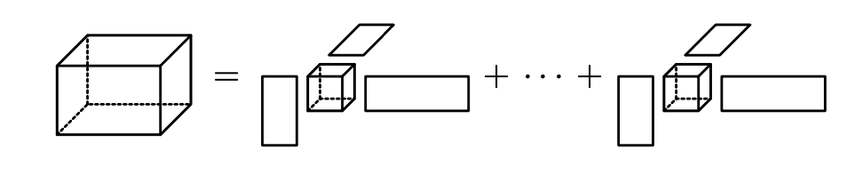

The 1st East German Tensor Day

This is the website for the first East German Tensor Day.
It will take place on September 1, 2021, at the Max-Planck-Institute for Dynamics of Complex Technical Systems in Magdeburg.
Description
Tensors a higher dimensional analogues of matrices and they are a fundamental building block in modern developments of data analysis and machine learning. The goal of this one-day workshop is to foster collaboration between researchers that work in East Germany on tensors and adjacent fields. The idea is to have an in-person seminar with four one-hour talks and enough time to explore new cooperations.
Registration
If you want to participate, send an email to paul.breiding@mis.mpg.de.Due to high hygiene measures we can only accept a restricted number of participants.
Organizers
Peter Benner, Max-Planck-Institute for Dynamics of Complex Technical Systems.Paul Breiding, Max-Planck-Institute for Mathematics in the Sciences Leipzig.
Thomas Kahle, Otto-von-Guericke University Magdeburg.
Speakers and Schedule
| Kirandeep Kour | Raffaella Mulas | Reinhold Schneider | Martin Stoll |
|---|---|---|---|
| MPI for Complex Technical Systems Magdeburg | MPI for Mathematics in the Sciences Leipzig | TU Berlin | TU Chemnitz |
| Simultaneous-updated Canonical Support Tensor Train Machine | Spectral theory of hypergraphs: Matrices vs Tensors | Representing polynomials in HT/TT format with application to polynomial regression and high dimensional PDEs | A journey from optimization with PDEs to tensor methods |
| An increasing amount of data collected are high-dimensional and efficient learning algorithms must utilize the tensorial structure as much as possible. The ever-present curse of dimensionality for high dimensional data and the loss of structure when vectorizing the data motivates the use of tailored low-rank tensor methods. We propose an algorithm of computing a Canonical Polyadic (CP) decomposition by avoiding the NP-hard issue of finding the best CP rank by computing first a Tensor Train (TT) decomposition and call it TT-CP factorization. Along with it, we define a nonlinear classification machine learning model. We build a full Gradient Descent Primal (GDP) optimization problem which takes initialized variables from the partial GDP model optimized via Support Tensor Machines (STM). In turn, the full GDP enhances a potential suboptimal CP decomposition computed in the first step. This leads to better classification accuracy and a reliable deterministic algorithm for computing the nonlinear boundary, each step of which admits a reasonable explanation. Hence, the full GDP can thus be seen as both a tensor decomposition method tailored to the classification problem, and a classification method that exploits the low-rank model of the data. With numerical examples, we show that this approach is benchmarked against other state-of-the-art techniques. | Spectral hypergraph theory studies the qualitative properties of a hypergraph that can be inferred from the eigenvalues and the eigenvectors of either square matrices or tensors associated with it. It generalizes the spectral theory of graphs, which has a long history and is widely used in applications. In this talk we will recall some key results in spectral graph theory before discussing spectral hypergraph theory, both via matrices and via tensors. We will also compare these two different techniques, and we will see some applications to dynamical systems and data analysis. | Low-rank tensors in tree based tensor format (HT), in particular tensor train format are an established framework for the parametrization of multivariate polynomials in form of multi-polynomials or tensor product polynomials. In many applications one is interested in low degree polynomials. We propose to an extended framework of concept of block-sparsity to efficiently parametrize homogeneous, multivariate polynomials with low-rank tensors. This provides a representation of general multivariate polynomials as a sum of homogeneous, multivariate polynomials, represented by block-sparse, low-rank TT tensors. We show that this sum can be concisely represented by a single block-sparse, low-rank TT tensor. We prove that the sizes of non-zero blocks can be bounded for certain polynomials. We further prove cases, where low-rank tensors are particularly well suited by showing that for banded symmetric tensors of homogeneous polynomials the block sizes in the block-sparse multivariate polynomial space can be bounded independent of the number of variables. By its connection to symmetric tensors, we obtain a tree based low rank tensor representation. We apply this block sparse tensor format to high-dimensional least squares regression problems where it demonstrates improved computational resource utilization and sample efficiency. Lastly, we give some numerical examples, where this parametrization performs exceptionally well. In addition we provide applications to feedback control and HJB (Hamilton Jacobi Bellmann) equations. | Researchers familiar with large-scale optimization are used to design iterative solvers and preconditioners. In many cases, the structure of the linear systems reveals even more interesting features and in this talk I recall how, while stumbling into time-periodic equations, I encountered the beauty of low-rank matrix methods and later tensor algorithms to solve challenging optimization problems. |
|
|
|